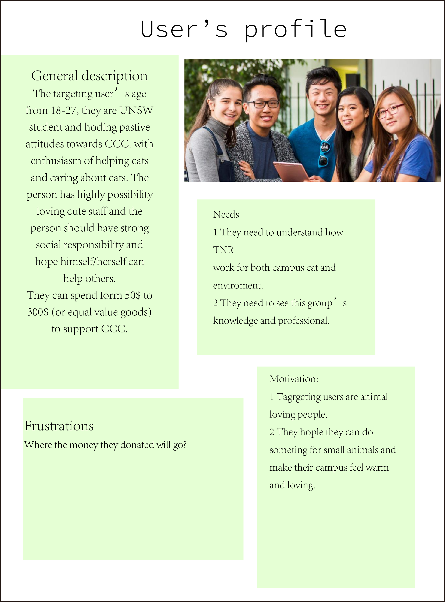
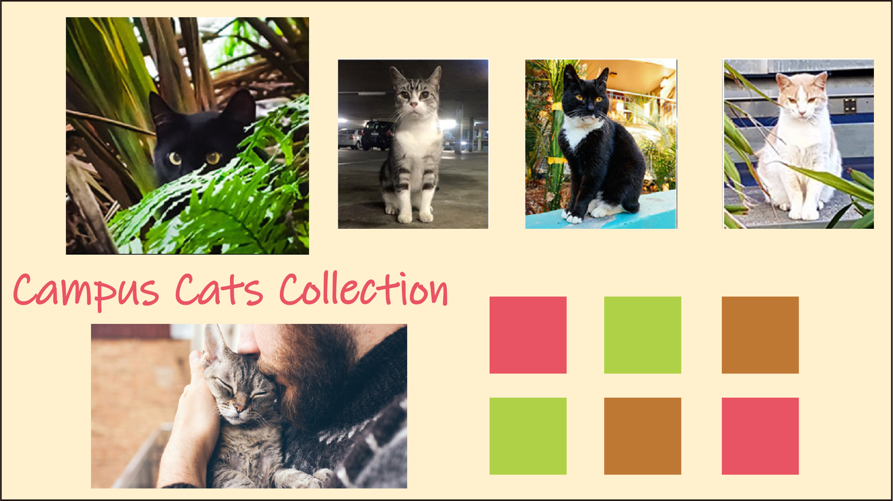

1 more iteration for CCC mock up
Introduction:
By the feedback of last assignment, I did 1 more iteration for pre research. That is including more accuracy user profiles, moodboard and needs of targeting user.
Interview:
I took interview to some UNSW's students and choosing some of them to anaylise the data. The interview data shows below.
Q1: How do you feel about CCC?
A1：Helping them is warm hearted, but without containment they are a threat to the eco-system.
A2：CCC is an organization that volunteers to help stray cats
A3: Great idea to make campus warm and lovely.
Q2: What do you want to see in the website?
A1：I want to see your knowledge and professional. I wish to ensure that I have entrusted capable people.
A2: There can be some precautions and rules for adopting small animals, to teach you how to take better care of a small animal.
A3: I want to see successful example in your website.
Q3: What are the reasons if you willing to support us?
A1：I love animals. And I support you if I can assure you are doing thing right.
A2: Because there are a lot of stray cats around the school, they are homeless, I hope there is an organization like this to help them.
A3: Using a good way to protect both animal and environment.
Q4: What are the reasons if you are willing join our group or TNR program?
A1: When I found out that you are actually helping with the cats, also the environment
A2: I'm agree of the idea that you don't adopt a stray cat when you don't have the skills or knowledge to do so
A3: If this group are really care about campus cat rather than money. It looks good but I do not know it is true or not.
Q5: What frustrate you when you think about donating a charity?
A1: Usually donating to charity I am afraid of corruption; money goes to someone's pocket rather than put in real use. But small group like you should be alright.
A2: When some immoral public welfare organizations, in the name of public welfare, take the goods donated by people and use them for their own use, they don't take good care of small animals and abuse them
A3: I think the money we donate should use to helping cats, not for “activity funds.”
A4:
Q6: How much do you wish to donate CCC?
A1: Depends on my financial situation at the time and how your work come along. Probably around 100$ or equal value cats’ food.
A2: I would like to donate some unnecessary books to the organization and buy some cat food if I can afford it. Maybe 50$ to 100$.
A3: I will not donate money, but I can donate cat’s food or some goods they need. It will be 300$ equal value.
Q7 what do you think this website can be improved?
A1: Too much words in one page, hard to read.A2: I hope to see some successful cases of them helping stray cats on this website, and to prove that they have the ability and conditions to help these cats from being hurt
A3: Maybe this organization can share the monthly account book.
Q5: What frustrate you when you think about donating a charity?
A1: Usually donating to charity I am afraid of corruption; money goes to someone's pocket rather than put in real use. But small group like you should be alright.
A2: When some immoral public welfare organizations, in the name of public welfare, take the goods donated by people and use them for their own use, they don't take good care of small animals and abuse them
A3: I think the money we donate should use to helping cats, not for “activity funds.”
A4:
Q6: How much do you wish to donate CCC?
A1: Depends on my financial situation at the time and how your work come along. Probably around 100$ or equal value cats’ food.
A2: I would like to donate some unnecessary books to the organization and buy some cat food if I can afford it. Maybe 50$ to 100$.
A3: I will not donate money, but I can donate cat’s food or some goods they need. It will be 300$ equal value.
Q7 what do you think this website can be improved?
A1: Too much words in one page, hard to read.A2: I hope to see some successful cases of them helping stray cats on this website, and to prove that they have the ability and conditions to help these cats from being hurt
A3: Maybe this organization can share the monthly account book.
According to the interview data. The targeting user’s profile shows below
Also based on interview and user's profile, I got something need to be improve for my website
1 Reducing heavy texts in home page, make the home page easy to read.
2 Show the knowledge and professional of CCC to make targeting users believe it.
3 Presenting some successful cases to let targeting user know about the how TNR work for both cats and environment.
4 Shearing account books to public. Let people know where the money they donated going.
5 Redesign for UX and make it easy to use.
Moodboard
I made one mood board for CCCThis mood board created by Cream yellow，Moeki green, Tang red and Amber brown four colors.
Tang red is a light red with pink tone. It means the warm and sincere love of CCC organization.
The combine of amber brown and cream yellow is inspired by the interior design area.
Those two colors can create a warm and harmonious mood, making users feel comfortable during the time they watch the website page.
Moeki green is a Japanese traditional color. That is a strong yellow-green color when the trees sprout in spring.
Symbolizing CCC’s vitality and future. Also, it can connect with amber brown to present UNSW’s green campus.
Redesigned Wireframe for desktop devices
I had subtracted the heavy text on the home page to make it easier for users to accept.
Changing the home page tags and adding more cat images to make the website more vis-ually attractive.
A person is carrying a cute cat image can inspire empathy.
Contact information appears at the bottom of each page. That will be convenient for users interested in this website to contact CCC organizations.
The original horizontal paragraph is changed into vertical paragraph, which reduces the heaviness of the text visually and makes users more willing to read the content.
This page is used to show the professionalism of the organization and provide users with some relevant knowledge. let users know more about what is CCC doing. Using different color of each part also aim atvisually reducing the heaviness of the texts and makes users more willing to read the content.
Display photos of cats that have been rescued successfully, so that users can trust the organization more and let them join CCC or give helping to CCC.
This page user can donate to CCC or adopting a campus cat to their home. The reason of why not put donate page in home page this is because CCC is a none for profit organization, the main propose is let more people know how to protect campus cat and environment both. If user happy with their idea and want to pay for that, it is great. But they will not put donate button in a conspicuous position. That will make people doubting the nature of CCC .
Redesigned Wireframe for mobile
Comparing and contras
between
Redesigned mock-up and origianl mock-up
Redesign home page
Original home page
Development
For the home page, I re optimized the interface layout and deleted some repetitive parts. (e.g. Robbo's photo) Tags are more concise than they were originally. In terms of colour matching, the three colour’s colour scheme used in mood board is used to make the feeling of the page clearer. Add more photos of the cats we've saved and a photo of a person with a cat smiling to give people a basic impression of what the organization is doing.
Redesign meet cats page
Original contect us page
Original meet cats page
Development
Compared with the original monotonous pictures, I selected three rescued kittens as examples to tell users some of their stories. Let users understand these kittens and what we did through stories. The images originally on this page are displayed on the home page.A separate contact us page was canceled. Instead, contact us information is placed directly at the bottom of each page. The advantage of this design is that after reading the content of the current page, interested users can contact CCC directly through the chat window below. At the same time, reduce the number of tags in the title, so that users can quickly find the content they are interested in.
Redesign guidence page
Original guidence page
Development
Compared with the original page, the new page optimizes the layout. Added more information about cat protection and TNR program. It shows how professional CCC are. That also is what user want to know in previous interview.
Redesign help us page
Original adoption page
Original donate page
Development
Compared with the original page, the new page integrates the option and donate pages, and gives more specific ways to donate. CCC is a charitable organization, not a begging organization. Therefore, donation methods ranging from daily necessities (such as cat food and essential medicines) to money assistance to CCC are welcome. Since CCC is a non profit organization, it will also publish its account books here. At the same time, it will also give users a sense of trust in CCC.
Redesign more about us page
Development
This is a new page. Compared with the original mock up, this page explains in more detail the work done by CCC and the professionalism and rigor of TNR program. Double paragraph typesetting can reduce the pressure of large text visually.
Guidance
Help Us
Homepage
MeetCats
MoreUs
Reference:
Home Page | Scholarships. Scholarships.unsw.edu.au. (2020). Retrieved 17 November 2020, from https://www.scholarships.unsw.edu.au/.
韓紅色（からくれないいろ）の色見本 | 色彩図鑑（日本の色と世界の色）. 色彩図鑑 - カラーセラピーランド . (2020). Retrieved 29 November 2020, from https://www.i-iro.com/dic/ karakurenai-iro.
萌黄（もえぎ）の色見本 | 色彩図鑑（日本の色と世界の色）. 色彩図鑑 - カラーセラピ ーランド . (2020). Retrieved 29 November 2020, from https://www.i-iro.com/dic/moegi.
(2020). Retrieved 29 November 2020, from https://www.i-iro.com/dic/kohaku-iro.
クリームイエロー（Cream Yellow）の色見本 | 色彩図鑑（日本の色と世界の色）. 色彩図 鑑 - カラーセラピーランド . (2020). Retrieved 29 November 2020, from https://www.i-iro.com/ dic/cream-yellow.
Campus Cat Coalition. Campuscats.org.au. (2020). Retrieved 26 October 2020, from http://www. campuscats.org.au/.
(2020). [Image]. Retrieved 27 October 2020, from https://d17fnq9dkz9hgj.cloudfront.net/ uploads/2018/04/Devon-Rex-Striped.jpg. (2020). [Image]. Retrieved 27 October 2020, from https://www.kingcounty.gov/~/media/depts/ regional-animal-services/images/All-Images/VolunteerMG.ashx?la=en
Campus Cat Coalition - More about us. Campuscats.org.au. (2020). Retrieved 27 October 2020, from http://www.campuscats.org.au/more_about_us.html#contactus
Campus Cat Coalition - Guidance and resources. Campuscats.org.au. (2020). Retrieved 27 October 2020, from http://www.campuscats.org.au/guidance_and_resources.html.
Ding, Y. (2020). Deco1016 assignment 3. Retrieved 27 October 2020, https://repl.it/@YiwenDing/ DECO1016ydin8913Assignment3#index.html